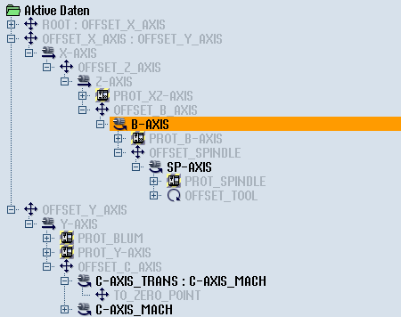

Wenn sich im Fenster Transformationen Eingabefelder auf kinematische Kettenelemente beziehen, können Sie die passende Elementbezeichnung direkt aus der Baumansicht des grafischen Maschinenmodells wählen und übernehmen:
Vorgehensweise
| | Sie befinden sich im Fenster "Transformationen" auf der Parameteransicht des gewählten Transformationstyps oder Werkzeugträgers. |
| Hinweis |
Elementbezeichnungen werden in der Baumansicht ausgegraut dargestellt, wenn sie nicht zur Parametereigenschaft des Eingabefelds passen. |